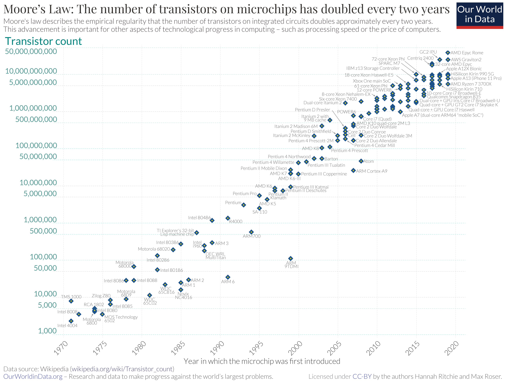

第2回 ITを支えるコンピュータのしくみ
Contents
第2回 ITを支えるコンピュータのしくみ#
この章で学ぶこと#
この章では、プログラミングを学ぶ前に知っておきたいコンピュータの背景知識について解説する。
Google Colabとクラウド#
まずは、Google Colabを例に、現在の私たちとコンピュータの関係の一端を紹介しよう。
初回の講義でGoogle Colab上のプログラムを実行したとき、最初のセットアップの時間を除けば一瞬で答えが返ってきたと思う。 ところで、この計算を行った実体は何であるかご存知だろうか。 一見するとGoogle Colabを表示している ブラウザ もしくはあなたのPCが計算を実行しているように見えたかもしれない。 しかし実はそうではない。
正解はGoogle Colab上で !curl ipinfo.io というコマンドを実行することで確かめることができる。
このコマンドは、コンピュータの位置情報を返してくれる。
私の環境では、次のような結果が返ってきた。
{
"ip": "34.125.107.162",
"hostname": "162.107.125.34.bc.googleusercontent.com",
"city": "Las Vegas",
"region": "Nevada",
"country": "US",
"loc": "36.1750,-115.1372",
"org": "AS396982 Google LLC",
"postal": "89111",
"timezone": "America/Los_Angeles",
"readme": "https://ipinfo.io/missingauth"
}
このうち ip の横の番号 34.125.107.162 は、 IPアドレス というインターネット上での住所を表す。
IPアドレスの番号は、通信を行う全世界のネットワークで一意となるように決められており、電話番号のようなものだと思ってよい（あなたのPC、スマホ、ゲーム機などもインターネット接続時にはIPアドレスが定められている）。
さらに上記の結果からは、IPアドレスに紐づいた地理情報なども確認することができる。
countryにはアメリカ、regionにはネバダ、cityにはラスベガスと書かれている。
実は計算を行った実体は、Google社の所有するアメリカのデータセンターのコンピュータ（ 写真 ）だったのである！
つまり、一瞬の間にプログラムの情報を乗せた光信号（一部のケーブルでは電気信号）が日本のあなたのPCを出発し、アメリカのとあるコンピュータに到達し、そして実行結果を乗せて帰ってきたということである。 さらに言えば、太平洋の海底に張り巡らされた 海底ケーブル を伝わって通信が行われているという事実は、ロマンに溢れていると感じないだろうか。
Google Colabのように利用者の必要とするコンピュータ資源を、必要なときに必要な量提供する仕組みのことを クラウド と呼ぶ。 私たちが検索したり、SNSや動画配信サイト、ECサイト、オンラインゲームを利用したりするとき、実は多くの場合に裏ではクラウドを利用しており、上で見たような世界規模の通信が行われている。 クラウドは私たちの社会・経済を支える重要なインフラとなりつつあり、皆さんも概要は知っておいてほしいので少し説明を加える。
まず、インターネットなどのネットワークを通じて何かしらのリクエストを受け、それに応じてサービスを提供するコンピュータのことを サーバー という。 従来、サーバーと言えば対応する1台のコンピュータが存在し、各社がWebサービスを展開するには、それを自前に用意してインターネットに公開するか他社からレンタルする必要があった。 レンタルサーバーの場合は1台のサーバーを複数ユーザーで利用するのが一般的だが、あくまで1つの大きな環境を共用で使うという形式である。 一方、クラウドが行っていることは、 1台の物理的なコンピュータに複数の独立した 仮想的 なサーバーを作り、そのうち1つを1ユーザーに貸し出すということである。 利用者の視点に立つと、物理的な単位・実体を気にすることなく、必要なときに必要なサイズのサーバーを借りることができる。 またクラウドプロバイダーの視点に立つと、大勢の利用者にコンピュータ資源をうまく配分してコンピュータの稼働率を100%に近づけることで、利益の最大化を図ることができる。 つまりクラウドとは、コンピュータの物理的な実体を抽象化し、自在にコンピュータ資源を配分できるようにすることで、ユーザーの利便性・資源の効率性を高めた技術と言うことができる。
このようにどこかの国のどこかのデータセンターの中のコンピュータを、日常的に意識することなく利用しているというのが、現在の私たちとコンピュータの関係の一例である。
コンピュータの性能の進化#
ここまで見てきたようなコンピュータの利用方法というのは、コンピュータを含む各種デバイスの性能の向上により可能になったものである。 ここでは発展のスピード感を知ってもらうため、 ムーアの法則 について紹介する。
まず、前提知識を簡単に紹介する（どこかで見聞きした単語が多いのではないだろうか）。 コンピュータの中で演算処理を担う頭脳にあたる部品が、 プロセッサ 別名 CPU （Central Processing Unit）である。 プロセッサは内部に 集積回路、英語名では IC （Integrated Circuit）を搭載している。 集積回路は、シリコン半導体基板の上に トランジスタ などの回路素子を大量に作り、まとめたものである。 とくにトランジスタは、コンピュータが用いる2進数の1/0を表現するという重要な役割を持っており（電流のon/offのスイッチ機構により実現する）、トランジスタの数が増えるに従いプロセッサの処理能力が向上するという関係がある。
ちなみに
アメリカのカリフォルニア州サンフランシスコ南郊の一帯は、シリコンバレーと呼ばれる。 これは半導体メーカーがこの地域に多く集まっていることに由来する（半導体の主な材料はシリコンである）。 シリコンバレーは、GAFA（Google, Apple, Facebook, Amazon）の本社が置かれているなど、アメリカのIT産業の中心地となっている。
さて本題のムーアの法則は、「集積回路上のトランジスタ数は2年ごとに倍になる」ことを予言したものである。 この法則は1965年に、後にインテルの共同創業者となるゴードン・ムーア氏により提唱された。 以下の図 1 は、実際のトランジスタ数の変化をプロットしたものである。

横軸は発売日、縦軸はトランジスタ数、1つ1つの点はこれまでに発売されたプロセッサ名を表す。 縦軸は対数スケールであることに気をつけよう。 1970年から現在まで、トランジスタ数はおよそ20年ごとに \(2^{10} \simeq 1000\) 倍、つまりムーアの法則通りに増加していることがわかる。
このような変化の仕方は 指数的 と表現される。 指数的な変化というのは、想像するのが難しいくらい急激な変化である。 実際、この50年で集積回路のトランジスタ数は7桁以上も増えており、驚異的な増加速度である。
ここではプロセッサの処理性能に関係するトランジスタ数についてムーアの法則を紹介した。 同様にメモリやストレージの容量、ネットワーク回線の通信速度など、コンピュータのあらゆる側面の性能が（必ずしも指数的とまでは行かなくても）劇的に向上し続けている。 近年のAIを含むIT技術の進展は、実はこのようなデバイスの飛躍的な進化を原動力としている。
Footnotes
- 1
出典: Max Roser, Hannah Ritchie and Edouard Mathieu (2013) - "Technological Change". Published online at OurWorldInData.org. Retrieved from: Online Resource
変わらないコンピュータのしくみ#
このようにコンピュータの物理的な性能は、日進月歩で進化している。 しかし、コンピュータの論理的なしくみに着目すると、基本的なところは昔から変わっていない。
2進数による情報の表現#
まずコンピュータ上のすべての情報・処理は、細かい要素に分解していけば、必ず0または1の数字の並び・操作にまで還元することができる。 例えば、私たちが普段スマホやパソコンで目にする画像や音楽、動画、文字、数字もすべて、大量の1/0の並びとして表現されている。
その基本となるのが数字の1/0での表現である。 1/0で表現された数字のことを 2進数（バイナリ） という。2進数では2の累乗（2, 4, 8, ...）ごとに桁が増える。 一方、私たちが普段使い慣れている数字は10進数である。これは10の累乗（10, 100, 1000, ...）ごとに桁が増える記法であった。 0から10までの数字について、対応する2進数の表記は以下のとおりである。
10進数 |
2進数 |
0 |
0 |
1 |
1 |
2 |
10 |
3 |
11 |
4 |
100 |
5 |
101 |
6 |
110 |
7 |
111 |
8 |
1000 |
9 |
1001 |
10 |
1010 |
2進数の桁の重みは右から順に1, 2, 4, 8なので、例えば2進数の1001は \(8\times1 + 4\times0 + 2\times0 + 1\times1 = 9\) より10進数の9に対応する。 3桁の2進数で0〜7までの8種類の数字を表現できていることに注目しよう。 \(n\) 桁の2進数で \(2^n\) 種類の数字を表現できるという点は重要である。 \(2^n\) は先ほど出てきた指数的な関係を表している。 したがって、少ない桁数で想像以上に多くのことを表現することができる。
なおコンピュータの世界では、2進数における1桁分を ビット、8桁分を バイト という。 よく出てくる単位なので覚えておこう。
ちなみに
\(2^n\) の増加速度がいかにすごいかがわかる例として「紙を30回折ったら」というのがある。 紙の厚さを0.1mmとして30回折ると、\(0.1\times 2^{30} {\rm mm}\simeq 10^8 ~{\rm mm} = 100 ~{\rm km}\) よりその厚さはなんと100km近くになる。これは地表から宇宙に到達する厚みである！ そう聞くと実際に試してみたくなるかもしれないが、現実には30回折る前に紙は破損してしまうだろう。
次に画像の1/0での表現について紹介する。 まずフィルムカメラで写真を撮ったときのことを考える。 このときフィルムカメラが行っていることは、被写体の光を集めて感光用の化学物質が塗られたフィルムに当てることで、光の情報を写しとることである。 フィルムカメラで撮られた写真は、光の位置や色をそのまま写しとるという意味で アナログ （連続的）な画像である。
一方で、スマホやパソコンに表示される画像は、光の位置や色についてとびとびの値で表現された デジタル （離散的）な画像である。 画面の液晶ディスプレイは、 ピクセル と呼ばれる小さな点が格子状に並べられてできており、虫眼鏡などで画面を拡大すれば1つ1つのピクセルを確認することができる。 また色についても、赤、緑、青の光の3原色に分解した上で、それぞれの度合いを基本的には0〜255の256段階の値で表現し、それに応じて各ピクセルが発光する。
赤、緑、青の各色の度合いについて256段階の数値で表現しているのは、まさに内部で2進数が使われていることの証左である。 というのも \(2^{8} = 256\) であり、ちょうど1バイトの2進数を使うと無駄なく表現できる範囲の数だからだ。 したがって、赤、緑、青の合わせて3バイトでの1つの色を表現していることになる（この表現法を RGB という）。
したがって例えば \(100\times100\) ピクセルの画像であれば \(100\times100\times3\) バイトの2進数で表現される。 単位として キロバイト（KB） （= 1000バイト）を用いれば、30KBの画像ということである。 ただし実際には、このように単純な方式で保存していることは少なく、さらに圧縮した形式（jpg、pngなど）で保存されているため、パソコン上で容量を調べるともっと小さい値になる。
ここでは数字と画像を例にとって、データの表現方法を説明した。 バイナリレベルに立ち返って考えれば、今のコンピュータも昔のコンピュータも扱っているデータは同じである。 さらに言うと、これらバイナリのデータに対して行える操作も昔から変わっていない。 どのような計算が行えるかという意味では、コンピュータはすべて（今も昔も、またスマホもパソコンも）同じなのである。
ソフトウェアのしくみ#
プログラムやデータを総称して ソフトウェア という。これは、コンピュータの物理的な構成要素を表す ハードウェア に対比される言葉である。 最後にソフトウェアのしくみについて、今後の講義に関係する部分に絞って簡単に解説する。
まず、改めての説明になるが、コンピュータに行わせたい処理の命令のことを プログラム と呼ぶ。 皆さんがこれから学ぶPythonは、プログラムを記述するための プログラミング言語 の1つであり、プログラミング言語でプログラムを記述したものを ソースコード （または コード）という。 私たちが普段パソコンで操作しているブラウザや、ワープロソフト、表計算ソフト、画像編集ソフトなどアプリケーションソフトウェア（略してアプリ）は、全て何かしらのプログラミング言語を使って作られている。 Pythonを学び続けることで原理的にはこういったソフトウェアも作れるようになる。
コンピュータに行わせたい処理には、しばしばハードウェアの操作が含まれる。 このときソフトウェアとハードウェアの間に立って、ハードウェアの操作を仲介する役割を持つのが OS（オペレーティングシステム） である。 OSはハードウェアに依存した詳細を隠蔽し、裸のコンピュータを人間に使いやすい姿に見せる役割を持っている。 このように物理的な実体を抽象化しその詳細を知らなくてもいいようにする考え方は、コンピュータのあらゆる側面に現れる普遍的なものである（クラウドもその一例であった）。 例えば、ハードウェアの基本的な制御は システムコール というプログラムとしてOSから提供されており、Pythonでも内部で活用している。
次に、Pythonプログラムをコンピュータが実行するしくみを解説する。 プログラムを実行する主体であるプロセッサは、Pythonのソースコードをそのままでは理解することができない。 プロセッサが直接理解できるプログラムは、 機械語 という1/0の数字の並びである（データだけでなくプログラムも最終的にはバイナリになるのだ！）。 Pythonでは、以下の流れでソースコードから機械語への変換が行われる。 Pythonを実行すると、まず インタープリタ と呼ばれる翻訳機が、ソースコードをバイトコードという中間データに変換する。 そしてPythonの仮想マシンがバイトコードを解釈して機械語を生成し、プロセッサに渡されて実行される。
機械語はプロセッサと強く結びついた言語であり、同じバイナリでもプロセッサごとに意味合いが変わる。 一方で、Pythonのソースコードの書き方はプロセッサなどの実行環境に依存していない。 このようなことが可能になっているのは、Pythonの仮想マシンが環境ごとの違いを吸収してくれているからである。 つまり、ソースコードやバイトコードは環境に依存しないが、Pythonの仮想マシンは機械語を生成する際、環境に合わせてバイナリを生成しているのである。 これもまた抽象化の一つであり、これにより私たちはプロセッサなどの環境の違いを意識することなく生産的にプログラムを作成できるほか、ソースコードの別の環境への移植が容易になっている。
ここではソフトウェアのしくみについてその一部分を簡単に解説した。様々な側面で抽象化が行われ、特に物理的な詳細に依存しないように作られていることが理解できただろうか。 抽象化された論理的なしくみはあまり変わらないからこそ、私たちは慌ただしく知識のアップデートをすることなく、コンピュータの物理的な性能向上の恩恵を受けることができるのである。